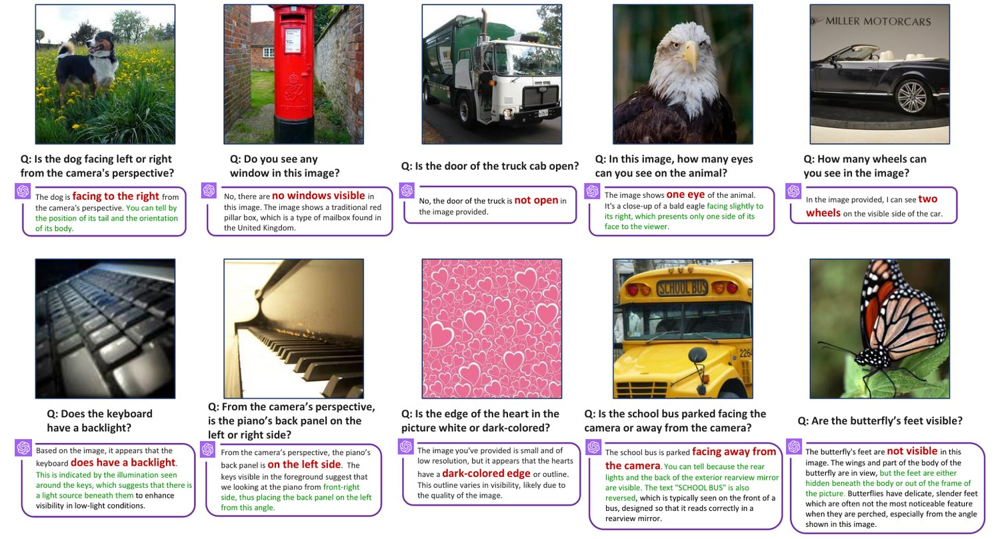
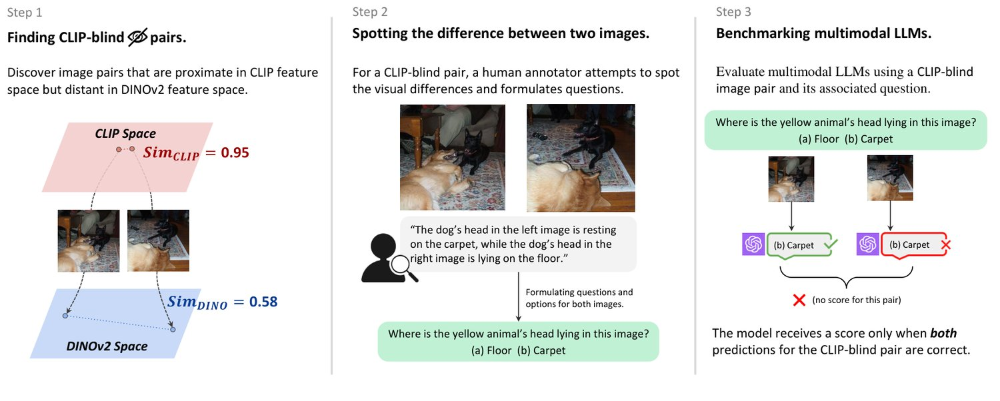
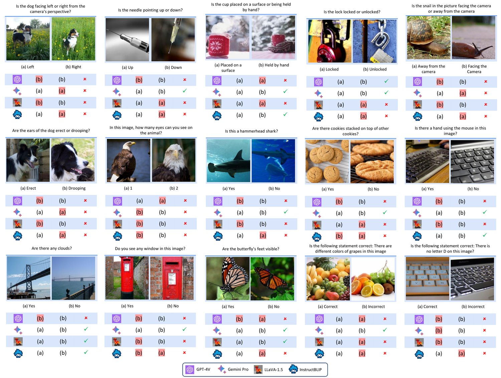
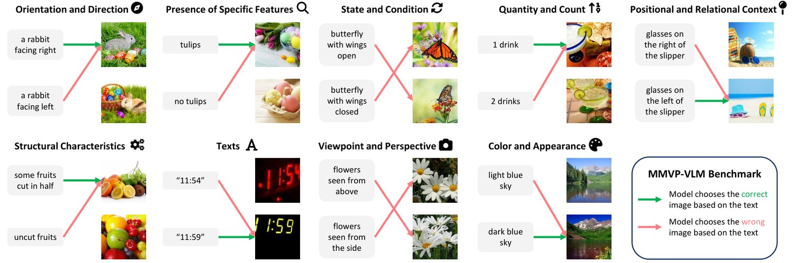
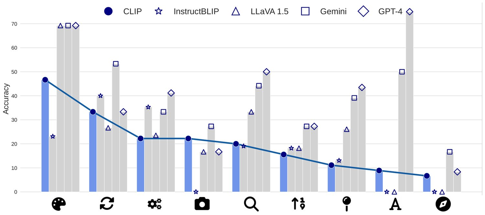
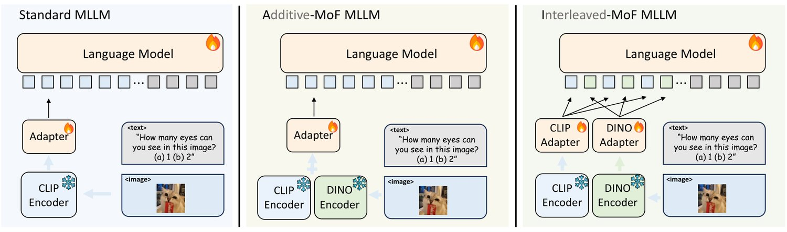
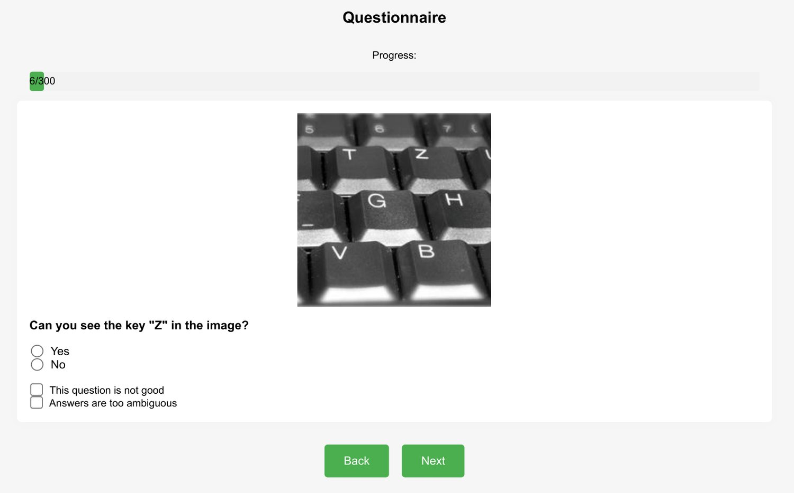
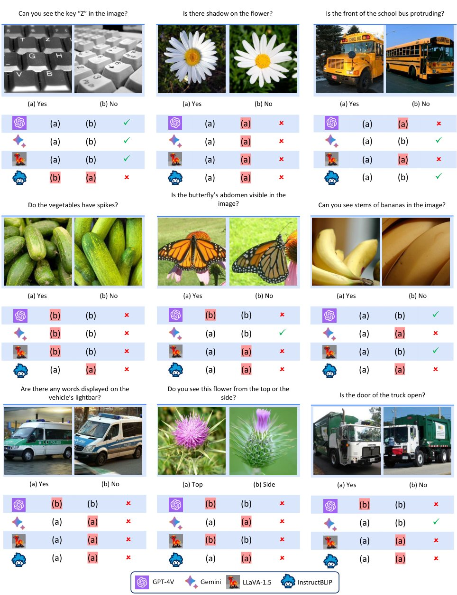
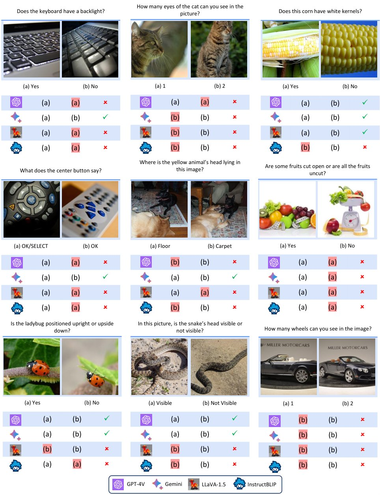
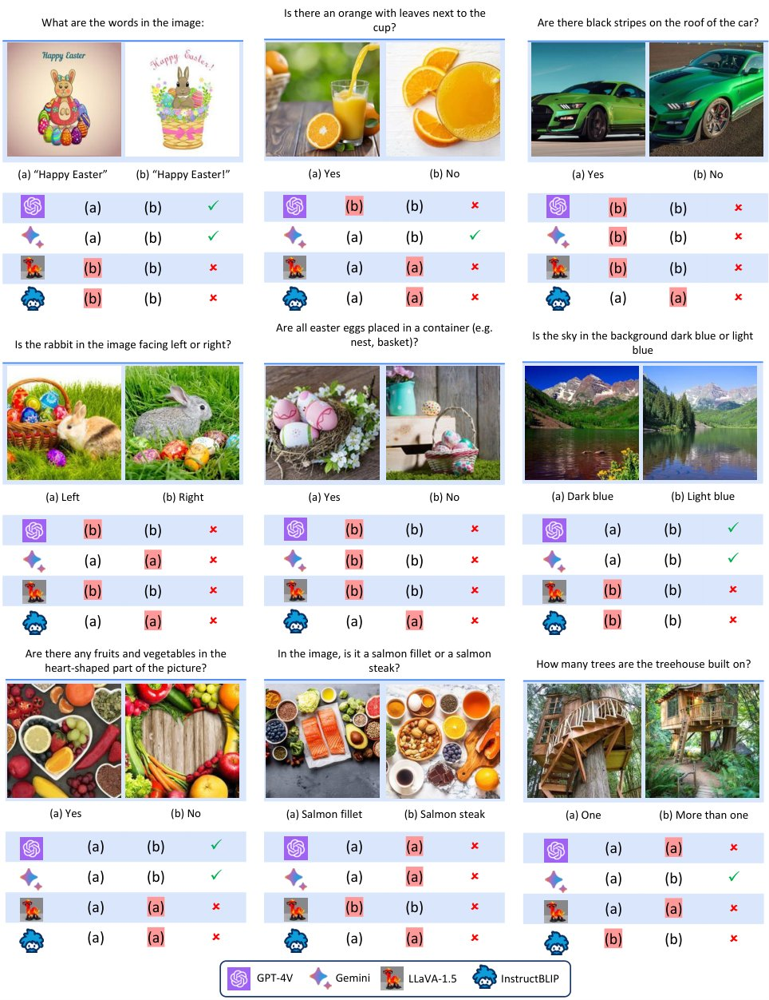

Eyes Wide Shut? Exploring the Visual Shortcomings of Multimodal LLMs
Is vision good enough for language? Recent advancements in multimodal models primarily stem from the powerful reasoning abilities of large language models (LLMs). However, the visual component typically depends only on the instance-level contrastive language-image pre-training (CLIP). Our research reveals that the visual capabilities in recent MultiModal LLMs (MLLMs) still exhibit systematic shortcomings. To understand the roots of these errors, we explore the gap between the visual embedding space of CLIP and vision-only self-supervised learning. We identify “CLIP-blind pairs” – images that CLIP perceives as similar despite their clear visual differences. With these pairs, we construct the Multimodal Visual Patterns (MMVP) benchmark. MMVP exposes areas where state-of-the-art systems, including GPT-4V, struggle with straightforward questions across nine basic visual patterns, often providing incorrect answers and hallucinated explanations. We further evaluate various CLIP-based vision-and-language models and found a notable correlation between visual patterns that challenge CLIP models and those problematic for multimodal LLMs. As an initial effort to address these issues, we propose a Mixture of Features (MoF) approach, demonstrating that integrating vision self-supervised learning features with MLLMs can significantly enhance their visual grounding capabilities. Together, our research suggests visual representation learning remains an open challenge, and accurate visual grounding is crucial for future successful multimodal systems.

图 1：我们系统地找出 GPT-4V [41] 的视觉问答（VQA）能力不及格的实例（访问日期：2023 年 11 月 4 日）。本研究突出了这样一类场景：像 GPT-4V 这样的先进系统，由于视觉定位不准确，在一些看似简单的问题上陷入困境。红色文字表示错误回答，绿色文字表示对错误答案的幻觉式解释。所引用的全部图像均来自 ImageNet-1K 与 LAION-Aesthetic 数据集。
Multimodal Large Language Models (MLLMs) [40, 13, 31, 8] have been rapidly developing in recent times. MLLMs integrate images into large language models (LLMs) and leverage the powerful abilities of LLMs [41, 59, 69], showcasing remarkable proficiency in tasks such as image understanding, visual question answering, and instruction following. In particular, the recently released GPT-4V(ision) [40] has pushed performance to an unprecedented level [41, 63].
多模态大语言模型（MLLM）[40, 13, 31, 8] 近来发展迅速。MLLM 把图像接入大语言模型（LLM），借助 LLM [41, 59, 69] 的强大能力，在图像理解、视觉问答与指令遵循等任务上展现出出色的熟练度。尤其是最近发布的 GPT-4V(ision) [40]，把性能推到了前所未有的高度 [41, 63]。
Beneath the advancements of these models, we find there exists a notable weakness: they still exhibit visual shortcomings, some of which are surprisingly elementary and evident (see Figure 1). We ask: Where do these problems originate? Is it a deficiency in visual modality, language understanding, or their alignment? In this work, we suggest that these shortcomings observed in MLLMs might stem from a problem related to the visual representations.
在这些模型进展的表象之下，我们发现存在一个值得注意的弱点：它们仍表现出视觉上的缺陷，其中一些甚至初级且显而易见（见图 1）。我们要问：这些问题源于何处？是视觉模态的不足、语言理解的不足，还是两者对齐的不足？本文提出，在 MLLM 中观察到的这些缺陷，可能源自与视觉表示有关的问题。
At their core, most MLLMs [8, 31, 71] are built on pretrained vision [43, 54] and language [68, 59, 69] models. These models are connected using various types of adapters [2, 26, 31] to integrate the different modalities. A natural hypothesis is that any limitation in the pretrained vision models can cascade into the downstream MLLMs that adopt them. Studies have explored a similar issue for language. For example, Yuksekgonul et al. [65], Tong et al. [57] demonstrate that failure patterns in the pretrained text encoder [43, 44] will lead to downstream failures in text-guided generative models [46, 22].
就本质而言，多数 MLLM [8, 31, 71] 建立在预训练的视觉模型 [43, 54] 与语言模型 [68, 59, 69] 之上，再用各类适配器 [2, 26, 31] 把两个模态连接起来。一个自然的假设是：预训练视觉模型的任何局限，都会级联传导到采用它们的下游 MLLM。已有研究在语言侧探讨过类似问题。例如 Yuksekgonul 等人 [65]、Tong 等人 [57] 证明，预训练文本编码器 [43, 44] 中的失效模式会导致文本引导生成模型 [46, 22] 在下游失效。
On the vision side, most open-source MLLMs [2, 26, 31] adopt the pretrained Contrastive Language-Image Pre-Training (CLIP) model [43] as the visual encoder. We begin by identifying failure examples that CLIP struggles to encode properly (Section 2). Inspired by Tong et al. [57], we exploit the erroneous agreements in the embedding space. If two visually different images are encoded similarly by CLIP, then at least one of the images is likely ambiguously encoded. We call such a pair of images a CLIP-blind pair. To measure the visual similarity between images, we use a vision-only self-supervised encoder such as DINOv2 [42]. In this context, CLIP-blind pairs are images with similar CLIP embeddings but different DINOv2 embeddings.
在视觉侧，多数开源 MLLM [2, 26, 31] 采用预训练的对比语言—图像预训练（CLIP）模型 [43] 作为视觉编码器。我们首先找出 CLIP 难以正确编码的失效样本（第 2 节）。受 Tong 等人 [57] 启发，我们利用嵌入空间中的错误一致性：如果两张视觉上明显不同的图像被 CLIP 编码得相似，那么其中至少有一张的编码是含混的。我们称这样一对图像为 CLIP 盲对（CLIP-blind pair）。为度量图像之间的视觉相似度，我们使用纯视觉自监督编码器，如 DINOv2 [42]。在此语境下，CLIP 盲对指的是 CLIP 嵌入相似而 DINOv2 嵌入不同的图像对。
We discover that these CLIP-blind pairs indeed lead to errors in downstream MLLMs. With these pairs, We introduce the MultiModal Visual Patterns (MMVP) benchmark. This benchmark is specifically designed to inquire about differences in CLIP-blind pairs and evaluate the visual abilities of state-of-the-art MLLMs with straightforward questions. We evaluate a variety of open-source [30, 31, 8, 71] and closed-source models [41, 13] including GPT-4V [40], and conduct a user study to measure human performance. The results show that MLLM models struggle with straight-forward visual questions. Most of these models perform below the level of random guessing, with GPT-4V being the exception. Yet, even GPT-4V exhibits a considerable disparity in performance – exceeding 50% – compared to human performance.
我们发现这些 CLIP 盲对确实会导致下游 MLLM 出错。基于这些图像对，我们提出多模态视觉模式（MMVP）基准。该基准专为询问 CLIP 盲对之间的差异而设计，用直白的问题评测当前最优 MLLM 的视觉能力。我们评测了多种开源 [30, 31, 8, 71] 与闭源 [41, 13] 模型，包括 GPT-4V [40]，并开展用户研究以度量人类表现。结果显示，各 MLLM 模型在直白的视觉问题上都颇为吃力：除 GPT-4V 之外，多数模型的表现低于随机猜测水平。然而即便是 GPT-4V，与人类表现相比也存在相当大的差距——超过 50%。
Having identified a large number of individual failure instances in MLLMs, we continue to study the systematic visual patterns in MMVP which CLIP models struggle (Section 3). We summarize nine prevalent patterns of the CLIP-blind pairs in MMVP, such as “orientation”, “counting”, and “viewpoint”, which pose significant challenges for the CLIP vision encoder. Notice that there has been significant and ongoing progress in scaling up both training data and model size for CLIP [43, 54, 10, 62, 66]. We categorize examples from MMVP into visual patterns to systematically assess whether scaling alone can mitigate these challenges. Our findings suggest that 7 out of the 9 identified visual patterns cannot be resolved by any large-scale CLIP-based models, indicating that model/data scaling alone is not sufficient. Moreover, we identify a strong correlation between the visual patterns that challenge CLIP models and the performance of MLLMs. If CLIP struggles with a particular visual pattern, such as “orientation”, MLLMs will likely also fall short. This shows that the CLIP vision encoders could become a bottleneck in such systems.
在找出 MLLM 中大量个别的失效实例之后，我们继续研究 MMVP 中令 CLIP 模型为难的系统性视觉模式（第 3 节）。我们从 MMVP 的 CLIP 盲对中归纳出九类常见模式，例如「朝向」「计数」与「视角」，它们对 CLIP 视觉编码器构成重大挑战。注意到 CLIP 在训练数据与模型规模上的扩展一直进展显著 [43, 54, 10, 62, 66]，我们把 MMVP 的样本归入各视觉模式，以系统评估仅靠扩展能否缓解这些挑战。我们的发现表明，9 类视觉模式中有 7 类无法被任何大规模 CLIP 类模型解决，说明仅靠模型／数据扩展并不充分。此外，我们发现令 CLIP 模型为难的视觉模式与 MLLM 的表现之间存在强相关性：如果 CLIP 在某个视觉模式（如「朝向」）上表现不佳，MLLM 很可能同样失手。这说明 CLIP 视觉编码器可能成为这类系统中的瓶颈。
Finally, we take a step towards improving the visual grounding of MLLMs. Since the visual shortcomings of MLLMs stem from their reliance on the CLIP model, we investigate the impact of integrating vision-centric representations into MLLMs (Section 4). Specifically, we explore ways to incorporate a vision-only self-supervised model, such as DINOv2 [42], to enhance the visual grounding capabilities of MLLMs. We refer to these techniques as Mixture-of-Features (MoF). First, we linearly mix CLIP and DINOv2 features in different ratios, which we refer to as Additive-MoF (A-MoF). This process reveals that DINOv2 features are more effective in visual grounding, though they come at the cost of diminished instruction-following ability. To address this, we introduce Interleaved-MoF (I-MoF) that spatially mixes visual tokens from both CLIP and DINOv2 models. We find that this practice significantly enhances visual grounding while maintaining the instruction-following capabilities.
最后，我们朝改善 MLLM 视觉定位的方向迈出一步。既然 MLLM 的视觉缺陷源于其对 CLIP 模型的依赖，我们考察把以视觉为中心的表示引入 MLLM 的效果（第 4 节）。具体地，我们探索如何引入纯视觉自监督模型（如 DINOv2 [42]）来增强 MLLM 的视觉定位能力，并把这类技术称为特征混合（MoF）。首先，我们按不同比例线性混合 CLIP 与 DINOv2 特征，称之为加性 MoF（A-MoF）。该过程揭示：DINOv2 特征在视觉定位上更有效，代价却是指令遵循能力下降。为此，我们提出交错 MoF（I-MoF），在空间上混合来自 CLIP 与 DINOv2 的视觉词元。我们发现这一做法在保持指令遵循能力的同时，显著增强了视觉定位。

图 2：通过 CLIP 盲对构建 MMVP 基准。左：我们首先找出 CLIP 嵌入相似而 DINOv2 嵌入不同的 CLIP 盲对。中：我们人工检视成对图像之间的差异，并依据图像差异设计问题。右：我们把问题连同 CLIP 盲对一起提给 MLLM。只有当该 CLIP 盲对的两个问题都回答正确时，模型才得分。
Currently, the majority of open-source MLLMs [31, 71, 8] use the off-the-shelf CLIP vision encoders to process images. In this section, we begin by identifying CLIP-blind pairs in the CLIP model (Section 2.1). Subsequently, we construct the Multimodal Visual Patterns-MLLM (MMVP-MLLM) benchmark using these CLIP-blind pairs (Section 2.2). We evaluate SOTA MLLMs including GPT-4V on the benchmark (Section 2.3) and find that all the tested models struggle with simple questions on visual details. A visualization of this process is provided in Figure 2.
目前，多数开源 MLLM [31, 71, 8] 使用现成的 CLIP 视觉编码器处理图像。本节先在 CLIP 模型中找出 CLIP 盲对（第 2.1 节），随后用这些 CLIP 盲对构建多模态视觉模式—MLLM（MMVP-MLLM）基准（第 2.2 节）。我们在该基准上评测包括 GPT-4V 在内的当前最优 MLLM（第 2.3 节），发现所有受测模型都在关于视觉细节的简单问题上挣扎。该过程的可视化见图 2。
It is challenging to directly find instances (images) that the CLIP vision encoder struggles to encode “properly”. To circumvent this issue, we extend the idea proposed in Tong et al. [57] to automatically find blind pairs in vision models. The underlying principle is simple: if two images, despite having stark visual differences, are encoded similarly by the CLIP vision encoder, then one of them is likely encoded ambiguously (See Figure 2 left for example). To measure the visual difference between two images, we examine the images’ representations within a reference model: a vision-only self-supervised model trained without any language guidance, e.g., DINOv2 [42]. These models are shown to capture more visual details and information [42, 53].
要直接找出 CLIP 视觉编码器难以「正确」编码的实例（图像）并不容易。为绕开这一困难，我们把 Tong 等人 [57] 提出的思路扩展到视觉模型，自动寻找盲对。其基本原理很简单：如果两张图像尽管视觉差异鲜明，却被 CLIP 视觉编码器编码得相似，那么其中一张很可能是被含混地编码了（示例见图 2 左侧）。为度量两张图像之间的视觉差异，我们考察它们在参照模型中的表示——一个在没有任何语言指导下训练的纯视觉自监督模型，例如 DINOv2 [42]。这类模型已被证明能捕捉更多的视觉细节与信息 [42, 53]。
We take the corpus datasets, ImageNet [47] and LAION-Aesthetics [48], to collect these CLIP-blind pairs.
我们以 ImageNet [47] 与 LAION-Aesthetics [48] 作为语料数据集来收集这些 CLIP 盲对。
For each pair, we compute its CLIP embeddings using CLIP-ViT-L-14 [9, 43] model and their DINOv2 embeddings using DINOv2-ViT-L-14 [9, 42] model. We return pairs such that the cosine similarity exceeds 0.95 for CLIP embeddings and less than 0.6 for DINOv2 embeddings.
对每个图像对，我们用 CLIP-ViT-L-14 [9, 43] 模型计算其 CLIP 嵌入，用 DINOv2-ViT-L-14 [9, 42] 模型计算其 DINOv2 嵌入。我们保留这样的图像对：CLIP 嵌入的余弦相似度超过 0.95，且 DINOv2 嵌入的余弦相似度低于 0.6。
We introduce the Multimodal Visual Patterns (MMVP) benchmark, and a Visual Question Answering (VQA) benchmark. Utilizing the collected CLIP-blind pairs, we carefully design 150 pairs with 300 questions. For each CLIP-blind pair of images, we manually pinpoint the visual details that the CLIP vision encoder overlooks (see the middle of Figure 2) and craft questions that probe these visual details, for example “Is the dog facing left or right?” (See the right of Figure 2 and more examples in Figure 3). The primary goal is to determine whether MLLM models would fail when posed with these seemingly basic questions and overlook critical visual details. Hence, the questions are intentionally straightforward and unambiguous.
我们提出多模态视觉模式（MMVP）基准——一个视觉问答（VQA）基准。利用收集到的 CLIP 盲对，我们精心设计 150 个图像对、300 个问题。对每个 CLIP 盲对，我们人工定位 CLIP 视觉编码器所忽略的视觉细节（见图 2 中部），并编制考察这些视觉细节的问题，例如「这只狗是朝左还是朝右？」（见图 2 右侧，更多示例见图 3）。主要目标是判断 MLLM 模型在面对这些看似基础的问题时是否会失败、是否会忽略关键的视觉细节。因此，这些问题被刻意设计得直白而无歧义。

图 3：MMVP 基准中的问题示例。错误答案以红色底纹标出。只有当模型把一对中的两个问题都答对时，才被视为正确。领先的闭源模型（GPT-4V、Gemini）与开源模型（LLaVA-1.5、InstructBLIP）都在这些简单的视觉问题上失败。（MMVP 基准的全部问题见附录 B.2。）
We assess the questions on SOTA open-source models (LLaVA-1.5 [31], InstructBLIP [8], Mini-GPT4 [71]) and closed-source models (GPT-4V [40], Gemini [14], Bard [13]) We leave details of how we access the model in Appendix B.1. In our evaluation, each question is queried independently, eliminating any biases from chat histories. We also evaluate human performance through a user study where users are presented with 300 questions in a randomized sequence. For any given pair of images, we consider a pair of images to be correctly answered if both the questions associated with the pair are answered accurately.
我们在当前最优的开源模型（LLaVA-1.5 [31]、InstructBLIP [8]、Mini-GPT4 [71]）与闭源模型（GPT-4V [40]、Gemini [14]、Bard [13]）上评测这些问题，模型访问方式的细节见附录 B.1。评测中每个问题都被独立提问，以消除对话历史带来的偏差。我们还通过用户研究评测人类表现：受试者以随机顺序接收 300 个问题。对任意给定图像对，只有当与该对相关的两个问题都被准确回答时，才认为该图像对被答对。
图 4：当前最优 MLLM 模型与人类的基准结果。我们通过用户研究评测了当前最优 MLLM 模型与人类在基准问题上的表现。

图 5：MMVP-VLM 的示例。MMVP-VLM 由覆盖九类视觉模式的图像对构成。图中示例取自 EVA01 ViT-g-14 模型 [54]——它是规模最大的 CLIP 模型之一，在给定文本描述时同样无法选对图像。
As shown in Figure 4, human participants accurately answer an average of 95.7% of the questions. This high accuracy rate underscores the ease of the questions. More details can be found in Appendix B.4.
如图 4 所示，人类受试者平均准确回答了 95.7% 的问题。这一高准确率说明问题本身很容易。更多细节见附录 B.4。
As shown in Figure 4, there is a significant performance gap between human and MLLM models, despite the latter often demonstrating impressive results [6, 27]. Models except GPT-4V and Gemini, scored below random guess level (25%). Most advanced GPT-4V and Gemini also face challenges in addressing basic visual grounding questions. Figures 1 and 3 provide examples of errors made by models. The outcomes suggest that irrespective of model size or training data, struggle with visual details.
如图 4 所示，尽管 MLLM 模型常常展现出令人印象深刻的结果 [6, 27]，它们与人类之间存在显著的性能差距。除 GPT-4V 与 Gemini 之外的模型，得分都低于随机猜测水平（25%）。最先进的 GPT-4V 与 Gemini 在回答基础的视觉定位问题时同样面临挑战。图 1 与图 3 给出模型所犯错误的示例。这些结果表明，无论模型规模或训练数据如何，模型都在视觉细节上挣扎。
We have also conducted an ablation study, such as swapping options and changing notations in the question formulation (see Appendix B.3 for more details), to further confirm that this poor performance stems from visual incapability, not hallucination in the language models.
我们还做了消融研究，例如交换选项、改变问题表述中的符号（详见附录 B.3），以进一步确认这种糟糕的表现源自视觉能力不足，而不是语言模型中的幻觉。
In the previous section, we identify CLIP-blind pairs and use them to find failures in MLLMs. Here, we delve deeper into these pairs to investigate (i) systematic visual patterns emerged from CLIP-blind pairs (Section 3.1), (ii) whether these visual patterns pose challenges for CLIP-based models with massive scaling up (Section 3.2), and (iii) the correlation between failure patterns in CLIP models and those in MLLMs (Section 3.3).
上一节我们找出 CLIP 盲对，并用它们发现 MLLM 中的失效。本节更深入地考察这些图像对，研究三个方面：（i）由 CLIP 盲对浮现出的系统性视觉模式（第 3.1 节）；（ii）这些视觉模式是否仍会给大规模扩展后的 CLIP 类模型带来挑战（第 3.2 节）；（iii）CLIP 模型与 MLLM 的失效模式之间的相关性（第 3.3 节）。
Having identified the CLIP-blind pairs, we summarize systematic visual patterns that the CLIP vision encoders might consistently misinterpret. It is too abstract to directly capture systematic visual patterns in the CLIP-blind pairs. Therefore, we turn to the questions and options from the MMVP benchmark. With these questions, we transform abstract visual patterns in images into clearer, language-based descriptors that are easier to categorize.
找出 CLIP 盲对之后，我们归纳出 CLIP 视觉编码器可能一贯误判的系统性视觉模式。直接捕捉 CLIP 盲对中的系统性视觉模式过于抽象，因此我们转向 MMVP 基准的问题与选项。借助这些问题，我们把图像中抽象的视觉模式转化为更清晰、更易于归类的基于语言的描述符。
In this work, we use GPT-4 [41] to categorize general patterns by prompting it with the following:
本工作中，我们用 GPT-4 [41] 通过如下提示对通用模式做归类：
We identify 9 visual patterns:
我们识别出 9 类视觉模式：
| Orientation and Direction | |
| Presence of Specific Features | |
| State and Condition | |
| Quantity and Count | |
| Positional and Relational Context | |
| Color and Appearance | |
| Structural and Physical Characteristics | |
| Text | |
| Viewpoint and Perspective |
These visual patterns suggest that CLIP vision encoders overly focus on high-level semantic understanding, overlooking intricate details of the visual world. Full descriptions of the visual patterns can be found in Appendix D.
这些视觉模式说明，CLIP 视觉编码器过度关注高层语义理解，忽略了视觉世界中错综复杂的细节。各视觉模式的完整描述见附录 D。
| Image Size | Params (M) | IN-1k ZeroShot | MMVP Average | ||||||||||
| OpenAI ViT-L-14 [43] | 2242 | 427.6 | 75.5 | 13.3 | 13.3 | 20.0 | 20.0 | 13.3 | 53.3 | 20.0 | 6.7 | 13.3 | 19.3 |
| OpenAI ViT-L-14 [43] | 3362 | 427.9 | 76.6 | 0.0 | 20.0 | 40.0 | 20.0 | 6.7 | 20.0 | 33.3 | 6.7 | 33.3 | 20.0 |
| SigLIP ViT-SO-14 [66] | 2242 | 877.4 | 82.0 | 26.7 | 20.0 | 53.3 | 40.0 | 20.0 | 66.7 | 40.0 | 20.0 | 53.3 | 37.8 |
| SigLIP ViT-SO-14 [66] | 3842 | 878.0 | 83.1 | 20.0 | 26.7 | 60.0 | 33.3 | 13.3 | 66.7 | 33.3 | 26.7 | 53.3 | 37.0 |
| DFN ViT-H-14 [10] | 2242 | 986.1 | 83.4 | 20.0 | 26.7 | 73.3 | 26.7 | 26.7 | 66.7 | 46.7 | 13.3 | 53.3 | 39.3 |
| DFN ViT-H-14 [10] | 3782 | 986.7 | 84.4 | 13.3 | 20.0 | 53.3 | 33.3 | 26.7 | 66.7 | 40.0 | 20.0 | 40.0 | 34.8 |
| MetaCLIP ViT-L-14 [62] | 2242 | 427.6 | 79.2 | 13.3 | 6.7 | 66.7 | 6.7 | 33.3 | 46.7 | 20.0 | 6.7 | 13.3 | 23.7 |
| MetaCLIP ViT-H-14 [62] | 2242 | 986.1 | 80.6 | 6.7 | 13.3 | 60.0 | 13.3 | 6.7 | 53.3 | 26.7 | 13.3 | 33.3 | 25.2 |
| EVA01 ViT-g-14 [54] | 2242 | 1136.4 | 78.5 | 6.7 | 26.7 | 40.0 | 6.7 | 13.3 | 66.7 | 13.3 | 13.3 | 20.0 | 23.0 |
| EVA02 ViT-bigE-14+ [54] | 2242 | 5044.9 | 82.0 | 13.3 | 20.0 | 66.7 | 26.7 | 26.7 | 66.7 | 26.7 | 20.0 | 33.3 | 33.3 |
表 1：各 CLIP 类模型在 MMVP-VLM 基准中不同视觉模式上的性能。提升分辨率带来的改进微乎其微，而扩大网络规模则略有优势。对每个视觉模式的 ImageNet-1k 零样本准确率与 MMVP 平均值，我们用浅灰色标出最佳性能。从分数可见，在多数视觉模式上，所有 CLIP 类方法都颇为吃力。受篇幅所限，我们用符号表示各视觉模式：：朝向与方向，：特定特征的有无，：状态与状况，：数量与计数，：位置与关系语境，：颜色与外观，：结构与物理特征，：文字，：视角与透视。
CLIP-based models have developed rapidly since the introduction in the first paper [43]. We want to test whether these visual patterns still impose challenges to the more recent CLIP models [10, 54, 66, 62], which significantly scale up in terms of training data and model size. In doing so, we introduce a new benchmark: MMVP-VLM to systematically study if CLIP models handle this visual pattern well.
自首篇论文 [43] 提出以来，CLIP 类模型发展迅速。我们想检验这些视觉模式是否仍会对更新的 CLIP 模型 [10, 54, 66, 62] 构成挑战——后者在训练数据与模型规模上都做了大幅扩展。为此，我们提出新基准 MMVP-VLM，以系统研究 CLIP 模型能否处理好这些视觉模式。
We distill a subset of questions from the MMVP benchmark into simpler language descriptions and categorize them into visual patterns. To maintain a balanced number of questions for each visual pattern, we add a few questions, if needed, to ensure that each visual pattern is represented by 15 text-image pairs. Examples of pairs are shown in Figure 5. A pair is deemed correctly answered if the model can accurately match both image-text combinations.
我们从 MMVP 基准中抽取一部分问题，提炼为更简洁的语言描述，并归入各视觉模式。为使每类视觉模式的问题数量均衡，必要时我们补充少量问题，确保每类视觉模式都由 15 个文本—图像对代表。图像对示例见图 5。若模型能准确匹配两个图文组合，则认为该图像对被答对。
We evaluate MMVP-VLM on a variety of CLIP models [43, 54, 10, 62, 66]. These models vary in aspects like size, training data, and methodology. As evidenced in Table 1, increasing network size and training data only aids in identifying two visual patterns – “color and appearance” and “state and condition”. The rest of the visual patterns continue to challenge all CLIP-based models. We also find that the ImageNet-1k zero-shot accuracy is not a definitive indicator of a model’s performance regarding visual patterns. This underscores the necessity for additional evaluation metrics, such as MMVP-VLM, to accurately assess the model’s capabilities in areas beyond image classification.
我们在多种 CLIP 模型 [43, 54, 10, 62, 66] 上评测 MMVP-VLM，这些模型在规模、训练数据与方法上各不相同。如表 1 所示，增大网络规模与训练数据只帮助识别两类视觉模式——「颜色与外观」和「状态与状况」，其余视觉模式仍然对所有 CLIP 类模型构成挑战。我们还发现，ImageNet-1k 零样本准确率并非模型在视觉模式上性能的决定性指标。这凸显出有必要引入 MMVP-VLM 这样的额外评测指标，以准确评估模型在图像分类之外的能力。

图 6：CLIP 与 MLLM 在各视觉模式上的性能。若 CLIP 在某个视觉模式（如「朝向」）上表现不佳，MLLM 在该视觉模式上同样表现不佳。
After analyzing the visual patterns that CLIP models struggle with, we pose the following question: Is there a correlation between the underperformance of CLIP and MLLMs’ visual incapability? To explore this, we categorize questions from MMVP into these visual patterns summarized and calculate each MLLM’s performance on these patterns.
分析完 CLIP 模型难以处理的视觉模式之后，我们提出如下问题：CLIP 的表现不佳与 MLLM 的视觉能力不足之间是否存在相关性？为探究这一点，我们把 MMVP 中的问题归入上述各类视觉模式，并计算每个 MLLM 在这些模式上的性能。
In Figure 6, we plot CLIP’s performance and MLLMs’ performance for each visual pattern. When the CLIP vision encoder underperforms on a certain visual pattern, the MLLM tends to exhibit similar shortcomings. Open-source models such as LLaVA 1.5 [30] and InstructBLIP [8] that explicitly use the CLIP vision encoder display a strong correlation in performance.
在图 6 中，我们针对每个视觉模式绘制了 CLIP 的性能与 MLLM 的性能。当 CLIP 视觉编码器在某个视觉模式上表现不佳时，MLLM 往往也表现出相似的缺陷。LLaVA 1.5 [30] 与 InstructBLIP [8] 等显式使用 CLIP 视觉编码器的开源模型，在性能上呈现出强相关性。
Further, we calculate the Pearson Correlation Coefficient between the CLIP model and MLLM’s performance on each visual pattern. Results show that LLaVA 1.5 and InstructBLIP all possess a coefficient score greater than 0.7. This high score indicates a strong correlation that weaknesses in visual pattern recognition in the CLIP model are transferred to MLLMs. More details on the Pearson Correlation Coefficient can be found in Appendix C.
此外，我们计算了 CLIP 模型与 MLLM 在各视觉模式上性能之间的皮尔逊相关系数。结果显示，LLaVA 1.5 与 InstructBLIP 的系数均大于 0.7。这一高分表明：CLIP 模型在视觉模式识别上的弱点被传导到了 MLLM，二者存在强相关性。关于皮尔逊相关系数的更多细节见附录 C。

图 7：MLLM 中不同的特征混合（MoF）策略。左：使用 CLIP 作为现成预训练视觉编码器的标准 MLLM；中：加性 MoF（A-MoF）MLLM——在适配器之前线性混合 CLIP 与 DINOv2 特征；右：交错 MoF（I-MoF MLLM）——在适配器之后空间交错 CLIP 视觉词元与 DINOv2 视觉词元。
Based on our exploration in earlier sections, a natural question arises: If open-sourced MLLM’s visual shortcomings come from the CLIP vision encoder, how do we build a more competent visual encoder? In this section, we take initial steps to answer the question by studying Mixture-of-Features (MoF). We start with additive MoF that mixes CLIP features and vision-only SSL model features. Results show that each encoder presents unique advantages and limitations when employed as the pretrained model in MLLM (Section 4.2). We subsequently propose Interleaved MoF that integrates the features from both CLIP and SSL into MLLM to enhance visual grounding without compromising the model’s ability to follow instructions (Section 4.3).
基于前几节的探索，一个自然的问题随之而来：如果开源 MLLM 的视觉缺陷来自 CLIP 视觉编码器，我们该如何构建更强的视觉编码器？本节通过研究特征混合（MoF）来初步回答这一问题。我们从加性 MoF 入手，混合 CLIP 特征与纯视觉 SSL 模型特征。结果显示，两种编码器在用作 MLLM 的预训练模型时各有独特的优势与局限（第 4.2 节）。随后我们提出交错 MoF，把来自 CLIP 与 SSL 的特征一并整合进 MLLM，在增强视觉定位的同时不损害模型的指令遵循能力（第 4.3 节）。
We adopt LLaVA [31, 30] as the framework to study visual encoders in MLLM. LLaVA uses a pretrained CLIP encoder and trains an adapter to align visual tokens with language tokens in the LLM. (See left side of Figure 7). We use DINOv2 [42] as the vision-only SSL model in our work because it is currently the most scalable vision-only model. Our exploration includes the use of two visual encoders: CLIP-ViT-L-14 [43] and DINOV2-ViT-L-14 [42]. To ensure consistent and fair comparisons, we train and finetune our model with the same experiment setting in LLaVA. We include the additional experimental details in Appendix A.
我们采用 LLaVA [31, 30] 作为研究 MLLM 中视觉编码器的框架。LLaVA 使用一个预训练的 CLIP 编码器，并训练一个适配器把视觉词元与 LLM 中的语言词元对齐（见图 7 左侧）。我们用 DINOv2 [42] 作为本工作中的纯视觉 SSL 模型，因为它是当前可扩展性最好的纯视觉模型。我们的探索使用两个视觉编码器：CLIP-ViT-L-14 [43] 与 DINOV2-ViT-L-14 [42]。为保证一致、公平的比较，我们沿用 LLaVA 的同一实验设置训练与微调模型。更多实验细节见附录 A。
We add a pretrained DINOv2 encoder into MLLM and mix the CLIP pretrained encoder with it. We use a coefficient to control the portion of CLIP features and to control the amount of DINOv2 features and linearly add them together (See middle part of Figure 7 for visualization).
我们在 MLLM 中加入一个预训练的 DINOv2 编码器，并把 CLIP 预训练编码器与之混合。我们用系数 控制 CLIP 特征的占比，用 控制 DINOv2 特征的分量，并把二者线性相加（可视化见图 7 中部）。
We evaluate the model’s visual grounding ability by the MMVP proposed earlier in Section 2 and the model’s instruction-following capability by LLaVA benchmark introduced in Liu et al. [31]. Initially, we conduct five experiments where we linearly transition from using 100% CLIP features to 100% DINOv2 features. In these tests, the DINOv2 feature proportions are set at . To further verify the observed trends, we introduce two additional experiments with DINOv2 proportions of . Our findings, presented in Table 2, reveal two insights:
我们用第 2 节提出的 MMVP 评估模型的视觉定位能力，用 Liu 等人 [31] 提出的 LLaVA 基准评估模型的指令遵循能力。最初我们做了五组实验，从 100% 使用 CLIP 特征线性过渡到 100% 使用 DINOv2 特征；这些实验中 DINOv2 特征的比例设为 。为进一步验证所观察到的趋势，我们追加了两组实验，DINOv2 比例为 。我们的发现见表 2，揭示了两点认识：
As the proportion of DINOv2 features increases, MLLM exhibits a decline in its instruction-following capability. Notably, there is a sharp decrease when the DINOv2 proportion reaches 87.5%.
1. 随着 DINOv2 特征比例上升，MLLM 的指令遵循能力下降。值得注意的是，当 DINOv2 比例达到 87.5% 时出现急剧下滑。
A higher proportion of DINOv2 features enhances the model’s visual grounding capability, but this advantage diminishes when the DINOv2 proportion surpasses 0.75, at which point instruction-following is notably impaired.
2. 更高比例的 DINOv2 特征增强了模型的视觉定位能力，但当 DINOv2 比例超过 0.75 后这一优势减弱，此时指令遵循能力已明显受损。
Hence, if we were to add DINOv2 features or completely replace CLIP with DINOv2, it would result in a trade-off between visual grounding and instruction-following. A higher proportion of DINOv2 features improves the model’s visual perception at the expense of its ability to follow linguistic instructions, while CLIP features enhance language comprehension but reduce visual grounding.
因此，若我们要么加入 DINOv2 特征、要么用 DINOv2 完全替换 CLIP，都会导致视觉定位与指令遵循之间的权衡：更高比例的 DINOv2 特征以牺牲语言指令遵循能力为代价改善模型的视觉感知，而 CLIP 特征增强语言理解却削弱视觉定位。
| method | SSL ratio | MMVP | LLaVA |
| LLaVA | 0.0 | 5.5 | 81.8 |
| LLaVA + A-MoF | 0.25 | 7.9 (+2.4) | 79.4 (-2.4) |
| 0.5 | 12.0 (+6.5) | 78.6 (-3.2) | |
| 0.625 | 15.0 (+9.5) | 76.4 (-5.4) | |
| 0.75 | 18.7 (+13.2) | 75.8 (-6.0) | |
| 0.875 | 16.5 (+11.0) | 69.3 (-12.5) | |
| 1.0 | 13.4 (+7.9) | 68.5 (-13.3) |
表 2：加性 MoF 的实证结果。本工作中我们以 DINOv2 作为图像 SSL 模型。随着加入的 DINOv2 特征增多，视觉定位有所改善，而指令遵循能力下降。
We propose interleaved MoF to leverage advantages from both CLIP and DINOv2 embeddings to enhance image representation. An image concurrently passes into CLIP and DINOv2 encoders, and the resulting embeddings are individually processed by adapters. We take the processed features from CLIP and DINOv2 and interleave them while maintaining their original spatial order. We then feed the interleaved features to LLM (See right part of Figure 7).
我们提出交错 MoF，以同时利用 CLIP 与 DINOv2 嵌入的优势来增强图像表示。一张图像同时送入 CLIP 与 DINOv2 编码器，所得嵌入各自经适配器处理。我们取处理后的 CLIP 与 DINOv2 特征，在保持其原有空间顺序的前提下交错排列，再把交错后的特征送入 LLM（见图 7 右侧）。
| method | res | #tokens | MMVP | LLaVA | POPE |
| LLaVA | 2242 | 256 | 5.5 | 81.8 | 50.0 |
| LLaVA | 3362 | 576 | 6.0 | 81.4 | 50.1 |
| LLaVA + I-MoF | 2242 | 512 | 16.7 (+10.7) | 82.8 | 51.0 |
| LLaVA1.5 | 3362 | 576 | 24.7 | 84.7 | 85.9 |
| LLaVA1.5 + I-MoF | 2242 | 512 | 28.0 (+3.3) | 82.7 | 86.3 |
表 3：交错 MoF 的实证结果。交错 MoF 在提升视觉定位的同时，保持了同等水平的指令遵循能力。
We summarize the results in Table 3. Under the LLaVA setting, interleave MoF significantly enhances visual grounding, with a 10.7% increase observed in MMVP, without compromising the model’s ability to follow instructions. This experiment is replicated with the LLaVA-1.5 setting and under various image resolution settings, yielding similar enhancements in performance. We also evaluate on POPE [27] which is designed to test hallucination in visual grounding. Interleaved-MoF also shows consistent improvement against the original LLaVA models. Merely increasing the image resolution, and consequently, the number of tokens does not boost visual grounding capabilities. Instead, it is the interleaving of MoF between vision-only SSL models and VLM models that leads to improved performance in visual grounding tasks. We conduct more experiments using MAE or MoCoV3 as vision-only SSL models in I-MoF and show similar improvements in visual grounding tasks in Appenfix E.1. We also evaluated Interleaved MoF on additional benchmarks such as MM-Bench [32] and GQA [21], finding that Interleaved MoF achieves similar performance on these benchmarks. Please refer to Appendix E.2 for more results on these benchmarks.
我们在表 3 中汇总结果。在 LLaVA 设置下，交错 MoF 显著增强了视觉定位，MMVP 上提升 10.7%，同时不损害模型的指令遵循能力。我们在 LLaVA-1.5 设置下以及不同图像分辨率设置下复现了该实验，得到相似的性能提升。我们还在专为检验视觉定位中幻觉而设计的 POPE [27] 上评测，交错 MoF 相对原始 LLaVA 模型同样表现出一致的改进。单纯提高图像分辨率、进而增加词元数量并不能提升视觉定位能力；真正带来视觉定位任务性能提升的，是纯视觉 SSL 模型与 VLM 模型之间的 MoF 交错。我们在 I-MoF 中用 MAE 或 MoCoV3 作为纯视觉 SSL 模型做了更多实验，在视觉定位任务上显示出相似改进，见附录 E.1。我们还在 MM-Bench [32] 与 GQA [21] 等更多基准上评测了交错 MoF，发现其性能相当。这些基准上的更多结果见附录 E.2。
Multimodal LLMs. We study the limitations of Multimodal LLMs [40, 13, 30, 31, 8] and explore possible ways to improve these models. Multimodal LLMs build from pretrained Large Language Models [41, 3, 58, 59, 69] and CLIP vision encoder [43, 54]. These systems then use an adapter, such as MLPs [30, 31], Q-Former [26, 8], and gated attention [2, 25], to integrate the pretrained CLIP vision encoder into LLMs. More recently, instructBLIP [8], LLaVA-1.5 [30] highlight the importance of high-quality training data. Yet, there is a scarcity of research focusing on the impact of visual encoders, which is an important gap our work aims to address through a systematic study.
多模态 LLM。我们研究多模态 LLM [40, 13, 30, 31, 8] 的局限，并探索改进这些模型的可能途径。多模态 LLM 由预训练的大语言模型 [41, 3, 58, 59, 69] 与 CLIP 视觉编码器 [43, 54] 搭建而成，再用 MLP [30, 31]、Q-Former [26, 8]、门控注意力 [2, 25] 等适配器把预训练的 CLIP 视觉编码器接入 LLM。更近期的工作，如 instructBLIP [8]、LLaVA-1.5 [30]，强调了高质量训练数据的重要性。然而聚焦视觉编码器影响的研究仍然稀缺，这正是本工作通过系统性研究试图填补的重要缺口。
Evaluating Multimodal LLMs. MMVP assesses MLLMs using a set of simple yet critical Visual Question Answering (VQA) questions constructed from CLIP-blind pairs. Previous benchmarks such as TextVQA [52], VQAv2 [15], and GQA [21] have centered on traditional VQA queries. Recently, there are works like MM-Vet [64], POPE [27], and MM-Bench [32] designed to specifically evaluate multimodal LLMs including hallucination, reasoning, and robustness. The previous benchmarks and evaluations have shown that Multimodal LLMs can suffer from hallucination [29, 28], catastrophic forgetting [67] and lack of robustness [11]. In taking a step back to the fundamentals, our work uncovers that even the most advanced multimodal LLMs, such as GPT-4V [40], Gemini [14], Bard [30], and LLaVA-1.5 [30], are not immune to stumbling over elementary visual questions. We also identified part of the problem as being the incapable visual encoder.
评测多模态 LLM。MMVP 用一组由 CLIP 盲对构造的、简单却关键的视觉问答（VQA）问题来评估 MLLM。此前的基准，如 TextVQA [52]、VQAv2 [15] 与 GQA [21]，聚焦传统的 VQA 查询。近来也出现了 MM-Vet [64]、POPE [27] 与 MM-Bench [32] 等专为评测多模态 LLM 而设计的工作，涵盖幻觉、推理与鲁棒性等方面。此前的基准与评测已经表明，多模态 LLM 可能存在幻觉 [29, 28]、灾难性遗忘 [67] 与鲁棒性不足 [11] 等问题。退回到最基本的问题上，本工作揭示出：即便是最先进的多模态 LLM，如 GPT-4V [40]、Gemini [14]、Bard [30] 与 LLaVA-1.5 [30]，也难免在初级视觉问题上栽跟头。我们还指出，问题的一部分在于视觉编码器能力不足。
Visual Encoders. MMVP-VLM provides a detailed analysis of the visual capabilities of various CLIP variants [43, 54, 62, 66]. These models mostly follow the method proposed in Radford et al. [43] that uses contrastive loss to train on large volumes of image-text pairs. They differ in training data [62], training recipes [54], and objective functions [66]. Nonetheless, our studies show that all of these CLIP variants struggle with simple visual patterns such as “orientation”, “count”, “presence of specific features”, etc. Another line of research focuses on vision-only self-supervised learning (SSL). This category includes contrastive SSL [7, 16, 5, 17] and mask-based SSL [70, 18, 4]. SLIP [39] explores the synergy between CLIP and contrastive SSL, but focusing primarily on standard classification tasks. In fact, a common practice to evaluate the quality of these vision models is through linear probing or fine-tuning on ImageNet [47, 45]. Although current evaluation methods provide a basic level of assessment on representation quality, our findings indicate a growing detachment from the needs of recent use cases. As demonstrated in the MoF experiments in Section 4, the CLIP vision model and the vision-only SSL models learn complementary features. However, the linear probing accuracy on ImageNet alone provides a limited understanding of feature utility in MLLMs. This observation suggests the need for more diverse evaluations [61] in visual representation learning, to better align with current and emerging applications.
视觉编码器。MMVP-VLM 对多种 CLIP 变体 [43, 54, 62, 66] 的视觉能力做了细致分析。这些模型大多沿用 Radford 等人 [43] 提出的方法，用对比损失在海量图文对上训练，区别体现在训练数据 [62]、训练配方 [54] 与目标函数 [66] 上。尽管如此，我们的研究表明，所有这些 CLIP 变体都在「朝向」「计数」「特定特征的有无」等简单视觉模式上挣扎。另一条研究线索聚焦纯视觉自监督学习（SSL），包括对比式 SSL [7, 16, 5, 17] 与基于掩码的 SSL [70, 18, 4]。SLIP [39] 探索了 CLIP 与对比式 SSL 之间的协同，但主要聚焦标准分类任务。事实上，评估这些视觉模型质量的常见做法是在 ImageNet [47, 45] 上做线性探测或微调。尽管现有评测方法能在一定程度上表征表示质量，我们的发现表明它们与近期用例的需求日益脱节。如第 4 节的 MoF 实验所示，CLIP 视觉模型与纯视觉 SSL 模型学到的是互补的特征；然而仅凭 ImageNet 上的线性探测准确率，对特征在 MLLM 中的效用提供的理解十分有限。这一观察说明，视觉表示学习需要更多样化的评测 [61]，以更好地契合当前与新兴的应用。
Ambiguities in Embedding Models. Our work exploits CLIP-blind pairs within the CLIP vision embedding space to generate examples of failures in CLIP models and subsequently MLLMs. This concept has ties to previous research focused on documenting failure modes in text embedding models [12, 36, 55]. More recently, Thrush et al. [56], Yuksekgonul et al. [65] and Hsieh et al. [19] study the binding problems CLIP faces in processing text queries, noting that CLIP models treat text input as a bag of words. Tong et al. [57] examines the implications for downstream text-guided generative models. Tschannen et al. [60] suggests image captioners as promising alternatives to CLIP for improving attribute binding. Our work focuses on the visual patterns.
嵌入模型中的含混性。本工作利用 CLIP 视觉嵌入空间中的 CLIP 盲对，生成 CLIP 模型乃至 MLLM 的失效样例。这一思路与此前记录文本嵌入模型失效模式的研究 [12, 36, 55] 相关。更近期地，Thrush 等人 [56]、Yuksekgonul 等人 [65] 与 Hsieh 等人 [19] 研究了 CLIP 在处理文本查询时的绑定问题，指出 CLIP 模型把文本输入当作词袋处理。Tong 等人 [57] 考察了其对下游文本引导生成模型的影响。Tschannen 等人 [60] 提出用图像描述器作为 CLIP 的替代，以改善属性绑定。本工作则聚焦视觉模式。
Circling back to the very first question we ask: is vision good enough for language? Perhaps not yet, as our study shows that vision models might become a bottleneck in multimodal systems. MLLMs fail in simple questions because their pre-trained CLIP vision encoders overlook crucial visual details in images, and systematically fail to sort important visual patterns. Yet, CLIP-type models remain the most scalable and widely used vision models today. Contrary to the popular belief that data and model scaling is a panacea, our research demonstrates that scaling alone does not rectify the inherent deficiencies in CLIP models.
回到我们最初提出的那个问题：对语言而言，视觉是否足够好？目前恐怕还不够——我们的研究表明，视觉模型可能成为多模态系统中的瓶颈。MLLM 在简单问题上失败，是因为其预训练的 CLIP 视觉编码器忽略了图像中关键的视觉细节，并系统性地无法梳理重要的视觉模式。然而 CLIP 类模型至今仍是可扩展性最好、使用最广泛的视觉模型。与「数据与模型扩展是万灵药」这一流行看法相反，我们的研究表明，单靠扩展并不能纠正 CLIP 模型的固有缺陷。
Our study reveals that popular visual representation learning models – vision-and-language models and vision-only self-supervised learning models – excel in different aspects. The distinction in their capabilities go beyond conventional benchmarks such as linear probing or zero-shot accuracy on ImageNet. Although a carefully designed Mixture-of-Features approach could alleviate visual limitations and utilize the strengths of these two learning paradigms, it is necessary to develop new evaluation metrics to facilitate the development of new visual representation learning algorithms. We hope our work can motivate further innovation in vision models.
我们的研究揭示出，主流的视觉表示学习模型——视觉—语言模型与纯视觉自监督学习模型——擅长的方面各不相同，其能力差异超出线性探测或 ImageNet 零样本准确率等常规基准所能刻画的范围。尽管精心设计的特征混合方法可以缓解视觉局限、利用这两种学习范式的长处，仍有必要开发新的评测指标，以推动新的视觉表示学习算法的发展。我们希望本工作能激发视觉模型领域的进一步创新。
Acknowledgements. We thank Penghao Wu, Muzi Tao, Erik Jones, Michael Psenka, Daniel Yeh, Druv Pai, Chen Sun for helpful discussions and feedback. This work was supported in part through the NYU IT High Performance Computing resources, services, and staff expertise. This research is also supported by Intel, Google TRC program, the Google Cloud Research Credits program with the award GCP19980904, and an Amazon Research Award Fall 2023. The authors thank hyperbolic labs for supporting part of the experiments. All experiments and data processing were performed at NYU.
致谢。我们感谢 Penghao Wu、Muzi Tao、Erik Jones、Michael Psenka、Daniel Yeh、Druv Pai、Chen Sun 富有帮助的讨论与反馈。本工作部分由 NYU IT 高性能计算资源、服务与人员专长支持。本研究还得到 Intel、Google TRC 计划、Google Cloud Research Credits 计划（奖项 GCP19980904）与 2023 年秋季亚马逊研究奖的支持。作者感谢 hyperbolic labs 对部分实验的支持。全部实验与数据处理均在 NYU 完成。
In this work, we adopt the same set of hyperparameters as LLaVA [31] and LLaVA-1.5 [30]. We use Vicuna-13b-v1.3 [69] in LLaVA experiments and Vicuna-13b-v1.5 [69] in LLaVA-1.5 experiments. We show the training hyperparameters for LLaVA and LLaVA-1.5 experiments in Table 4. All experiments are conducted using a maximum of 8 Nvidia A100 GPUs.
本工作采用与 LLaVA [31]、LLaVA-1.5 [30] 相同的一组超参数。LLaVA 实验中使用 Vicuna-13b-v1.3 [69]，LLaVA-1.5 实验中使用 Vicuna-13b-v1.5 [69]。LLaVA 与 LLaVA-1.5 实验的训练超参数见表 4。所有实验最多使用 8 块 Nvidia A100 GPU 完成。
| Hyperparameter | LLaVA | LLaVA-1.5 | ||
| Stage 1 | Stage 2 | Stage 1 | Stage 2 | |
| batch size | 128 | 128 | 256 | 128 |
| lr | 1e-3 | 2e-5 | 2e-3 | 2e-5 |
| lr schedule decay | cosine | cosine | cosine | cosine |
| lr warmup ratio | 0.03 | 0.03 | 0.03 | 0.03 |
| weight decay | 0 | 0 | 0 | 0 |
| epoch | 1 | 3 | 1 | 1 |
| optimizer | AdamW [33] | |||
| DeepSpeed stage | 2 | 3 | 2 | 3 |
表 4：在 LLaVA 与 LLaVA-1.5 上做 MoF 训练的超参数。
We use the same dataset for both LLaVA and LLaVA-1.5 experiments. For LLaVA experiments, stage 1 uses CC595k [50] and stage 2 uses LLaVA 158k [31] instruction data; For LLaVA-1.5 experiments, stage 1 uses CC595k [50] and stage 2 uses DataMix 665k [31, 1, 15, 21, 35, 38, 49, 51, 34, 23, 24] proposed in Liu et al. [30].
我们在 LLaVA 与 LLaVA-1.5 两组实验中使用相同的数据集。LLaVA 实验中，第 1 阶段使用 CC595k [50]，第 2 阶段使用 LLaVA 158k [31] 指令数据；LLaVA-1.5 实验中，第 1 阶段使用 CC595k [50]，第 2 阶段使用 Liu 等人 [30] 提出的 DataMix 665k [31, 1, 15, 21, 35, 38, 49, 51, 34, 23, 24]。
We provide more details on the MMVP benchmark.
我们提供 MMVP 基准的更多细节。
We access GPT-4V through ChatGPT in October and November 2023. We also evaluate Gemini-Pro through Vertex AI API in December 2023. We use the official checkpoints for InstructBLIP [8]. We access mini-GPT4 [71],11 1 To circumvent response hallucination in mini-GPT4 we prefix our questions with “Please only choose an option to answer the question below without explanation: ” LLaVA and LLaVA-1.5 [31] through their playgrounds. We test Bard [13] using the official website in September and October 2023. Moreover, we test new-Bing [37] through new-Bing chat creative mode and GPT-4V [40] in September 2023.
我们在 2023 年 10 月与 11 月通过 ChatGPT 访问 GPT-4V，并于 2023 年 12 月通过 Vertex AI API 评测 Gemini-Pro。InstructBLIP [8] 使用官方检查点。我们通过各自的 playground 访问 mini-GPT4 [71]、LLaVA 与 LLaVA-1.5 [31]（为规避 mini-GPT4 的回答幻觉，我们在问题前加上前缀「请只选择一个选项回答下列问题，不要解释：」）。我们在 2023 年 9 月与 10 月通过官方网站测试 Bard [13]。此外，我们在 2023 年 9 月通过 new-Bing 聊天创作模式测试 new-Bing [37] 与 GPT-4V [40]。
To further verify that MLLMs make mistakes in MMVP due to their incapable visual grounding instead of hallucination in the language model [20]. We conduct additional ablation experiments on the format and notations of VQA questions and options in MMVP. We choose GPT-4V to do these experiments, as it is currently the best model.
为进一步确认 MLLM 在 MMVP 上犯错源于其视觉定位能力不足，而非语言模型中的幻觉 [20]，我们针对 MMVP 中 VQA 问题与选项的格式与符号做了额外的消融实验。我们选择 GPT-4V 做这些实验，因为它是当前最好的模型。
The first experiment swaps the two options in the MMVP benchmark. For example, we change the question from “Are the butterfly’s wings closer to being open or closed? (a) Open (b) Closed” to “Are the butterfly’s wings closer to being open or closed? (a) Closed (b) Open”.
第一组实验交换 MMVP 基准中的两个选项。例如，把问题从「这只蝴蝶的翅膀更接近张开还是合拢？(a) 张开 (b) 合拢」改为「这只蝴蝶的翅膀更接近张开还是合拢？(a) 合拢 (b) 张开」。
Empirically, we find that GPT-4V obtains a 40.3% accuracy on the option swapping in our study, as opposed to the original 38.7%. We observe that a few questions are answered differently, while the majority remain the same. This further suggests that the visual incapabilities are in the vision encoder rather than in alignment or the LLMs.
实验上我们发现，GPT-4V 在选项交换实验中取得 40.3% 的准确率，而原始设置为 38.7%。我们观察到少数问题的回答发生了变化，多数保持不变。这进一步说明，视觉能力不足出在视觉编码器中，而不是在对齐环节或 LLM 中。
We conducted an ablation study to assess the impact of altering notations. For example, we changed “(a) Closed (b) Open” to “(1) Closed (2) Open”. The results are comparable to the original findings, achieving a performance of 37.3%, closely matching the original 38.7%. The study further suggests that the core challenge in MLLMs is their inherent visual incapability, rather than hallucinations in the language model.
我们做了一项消融研究，评估改变符号的影响。例如，把「(a) 合拢 (b) 张开」改为「(1) 合拢 (2) 张开」。结果与原始发现相当，性能为 37.3%，与原始的 38.7% 十分接近。该研究进一步说明，MLLM 的核心挑战在于其固有的视觉能力不足，而非语言模型中的幻觉。
In this study, we ask four participants to volunteer in our study. An example user interface for labeling is shown in Figure 8. We collect their responses and calculate the average score as the human-level performance.
本研究中我们邀请四名参与者志愿参加。标注所用的用户界面示例见图 8。我们收集他们的回答，并取平均分作为人类水平的表现。

图 8：用户研究界面示例。用户研究中的问题被随机打乱，以避免任何潜在偏差。用户为 VQA 问题选择答案，同时选择对该 VQA 问题的潜在顾虑。
We compute the Pearson Correlation between the CLIP model and MLLMs and show results in Table 5. Notably, both open-source models – LLaVA and InstructBLIP – exhibit remarkably high Pearson Correlation, exceeding 0.7. This finding indicates a strong correlation between the errors made by the CLIP model and those made by MLLMs. Bard also displays a very high correlation. This suggests that some of the most advanced closed-source models are also affected by the visual limitations in the CLIP models.
我们计算 CLIP 模型与 MLLM 之间的皮尔逊相关性，结果见表 5。值得注意的是，LLaVA 与 InstructBLIP 这两个开源模型都表现出极高的皮尔逊相关性，超过 0.7。这一发现表明，CLIP 模型所犯的错误与 MLLM 所犯的错误之间存在强相关性。Bard 同样显示出很高的相关性，这说明部分最先进的闭源模型也受到 CLIP 模型视觉局限的影响。
| LLaVA-1.5 | InstructBLIP | Bard | Gemini | GPT-4 | |
| Correlation | 0.87 | 0.71 | 0.79 | 0.72 | 0.31 |
表 5：CLIP 模型与 MLLM 之间的皮尔逊相关性。显式使用 CLIP 类模型的开源模型以灰色标出。
We plot the ImageNet-1k Zero-shot accuracy against MMVP-VLM average performance in Figure 9. For models with ImageNet-1k Zero-shot accuracy below 80, a higher Zero-shot accuracy tends to indicate improved MMVP performance. However, in models with superior ImageNet-1k Zero-shot performance, this trend does not necessarily hold for MMVP-VLM accuracy. This distinction accentuates the value of MMVP-VLM as an evaluation metric, which probes into visual patterns such as orientation – aspects that are pivotal for downstream tasks and go beyond what is captured by ImageNet accuracy alone.
我们在图 9 中绘制 ImageNet-1k 零样本准确率与 MMVP-VLM 平均性能的关系。对 ImageNet-1k 零样本准确率低于 80 的模型，更高的零样本准确率往往意味着更好的 MMVP 性能；然而在 ImageNet-1k 零样本性能更优的模型中，这一趋势对 MMVP-VLM 准确率未必成立。这一区别凸显了 MMVP-VLM 作为评测指标的价值：它深入考察朝向等视觉模式——这些方面对下游任务至关重要，又超出了 ImageNet 准确率所能刻画的范围。
图 9：ImageNet-1k 零样本准确率与 MMVP-VLM 平均性能之间的相关性。每个气泡的面积对应模型的参数量。更高的 ImageNet-1k 零样本性能并不一定意味着 MMVP-VLM 上的性能更优。
Here, we provide the full description of visual patterns that pose challenges to all CLIP-based models.
此处给出对所有 CLIP 类模型构成挑战的视觉模式的完整描述。
Orientation and Direction: Questions about the direction something is facing or moving, such as the direction the dog or duck is facing, or the orientation of the school bus.
• 朝向与方向：关于某物所朝方向或运动方向的问题，例如狗或鸭子朝向哪边，或校车的朝向。
Presence of Specific Features: Questions that focus on the existence or non-existence of certain elements or features in the image.
• 特定特征的有无：聚焦图像中某些元素或特征存在与否的问题。
State and Condition: Questions that pertain to the state or condition of an object, such as whether a flag is blowing in the wind or if the ground is wet.
• 状态与状况：关于物体状态或状况的问题，例如旗帜是否在风中飘扬、地面是否潮湿。
Quantity and Count: Questions about the number of objects or features present in the image.
• 数量与计数：关于图像中物体或特征数量的问题。
Positional and Relational Context: This aspect refers to the model’s ability to understand the position and relationship of objects or elements within an image in relation to each other and their surroundings.
• 位置与关系语境：指模型理解图像中物体或元素彼此之间及其与周围环境之间位置和关系的能力。
Color and Appearance: Questions regarding the color of certain objects or elements.
• 颜色与外观：关于某些物体或元素颜色的问题。
Structural and Physical Characteristics: This category involves the model’s ability to identify and analyze the physical attributes and structural features of objects in an image.
• 结构与物理特征：指模型识别并分析图像中物体物理属性与结构特征的能力。
Text: Questions related to text or symbols present in the image.
• 文字：与图像中出现的文字或符号有关的问题。
Viewpoint and Perspective: Questions concerning the perspective from which the photo was taken.
• 视角与透视：关于照片拍摄视角的问题。
Here, we conduct extra experiments to study MoF involving MAE [18] or MoCoV3 [17] instead of DINOv2; See Table 6. In Table 6, we observe that with MAE/MoCov3, there is a consistent improvement in visual grounding ability, as shown in the MMVP and POPE benchmarks.
此处我们做额外实验，研究用 MAE [18] 或 MoCoV3 [17] 替代 DINOv2 的 MoF；见表 6。在表 6 中我们观察到，使用 MAE／MoCov3 时视觉定位能力有一致的提升，如 MMVP 与 POPE 基准所示。
| method | SSL Model | res | #tokens | MMVP | POPE |
| LLaVA1.5 | None | 3362 | 576 | 24.7 | 85.9 |
| LLaVA1.5 + I-MoF | MoCov3 | 2242 | 512 | 26.7 (+2.0) | 86.1 |
| LLaVA1.5 + I-MoF | MAE | 2242 | 512 | 27.3 (+2.6) | 86.1 |
| LLaVA1.5 + I-MoF | DINOv2 | 2242 | 512 | 28.0 (+3.3) | 86.3 |
表 6：使用不同纯视觉 SSL 模型的交错 MoF 结果
| method | res | #tokens | MMVP | LLV | LLV | MMB | VQA | POPE | VQA | MM-V |
| LLaVA1.5 | 3362 | 576 | 24.7 | 84.7 | 70.7 | 67.7 | 61.3 | 85.9 | 80.0 | 35.4 |
| LLaVA1.5 + I-MoF | 2242 | 512 | 28.0 | 82.7 | 73.3 | 61.6 | 55.3 | 86.3 | 77.3 | 33.5 |
| LLaVA1.5 + I-MoF | 3362 | 1152 | 31.3 | 81.8 | 73.3 | 65.4 | 58.7 | 86.7 | 79.3 | 34.6 |
表 7：在另外 6 个基准上与 LLaVA-1.5 的比较。交错 MoF 版 LLaVA-1.5 在多数基准上与原始方法性能相当，同时在评测视觉定位的基准上有所提升。受篇幅所限，基准名采用缩写。LLV：LLaVA Benchmark [31]；LLV：LLaVA-In-the-Wild [30]；MMB：MMBench [32]；VQA：TextVQA [52]；POPE：POPE [27]；VQA：VQA-v2 [15]；MM-V：MM-Vet [64]。
We conduct additional experiments on Interleaved-MoF that further scale up the resolution to 336 and evaluate on more benchmarks. The summarized results in Table 7 reveal that Interleaved-MoF achieves comparable performance on most benchmarks while demonstrating improvements in benchmarks focused on visual grounding. We also observe that MMVP are more sensitive to the model’s visual capabilities, underscoring the significance of our benchmark in assessing visual proficiency.
我们对交错 MoF 做了更多实验，把分辨率进一步扩展到 336，并在更多基准上评测。表 7 汇总的结果显示，交错 MoF 在多数基准上性能相当，同时在聚焦视觉定位的基准上有所提升。我们还观察到 MMVP 对模型的视觉能力更为敏感，这凸显了我们的基准在评估视觉能力上的意义。

图 10：MMVP 基准中更多问题示例（第一部分）。

图 11：MMVP 基准中更多问题示例（第二部分）。

图 12：MMVP 基准中更多问题示例（第三部分）。